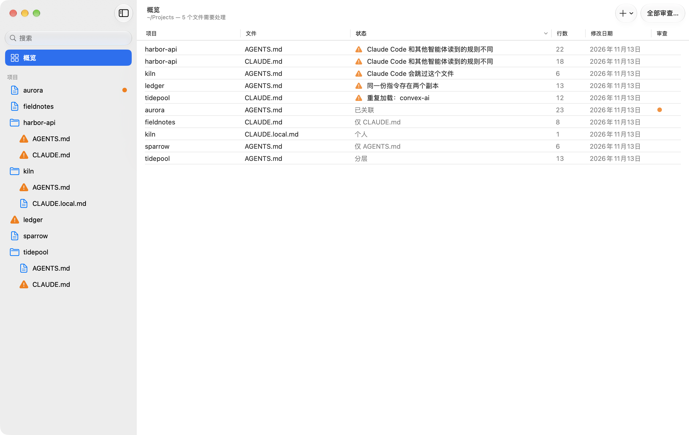
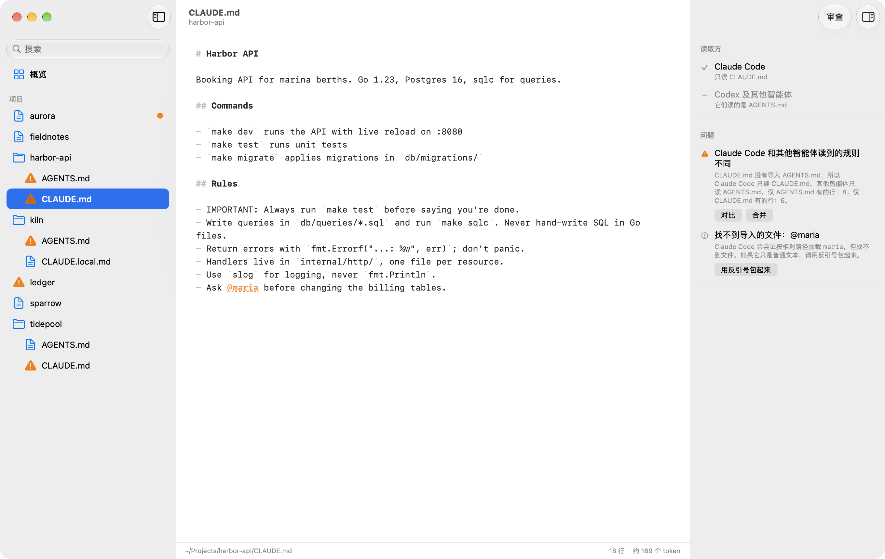
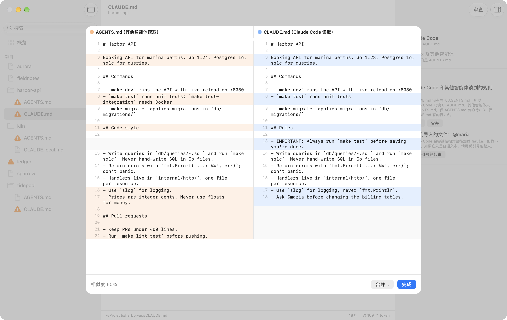
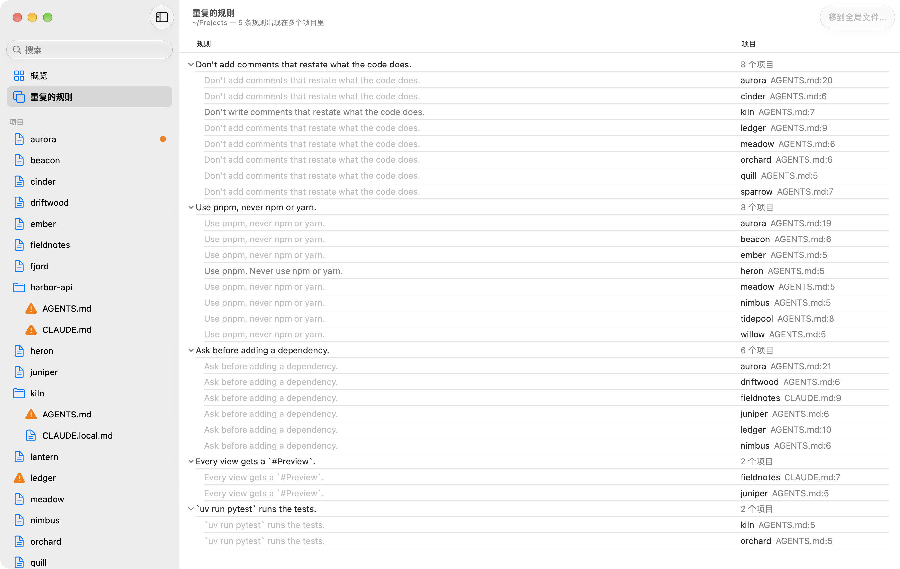
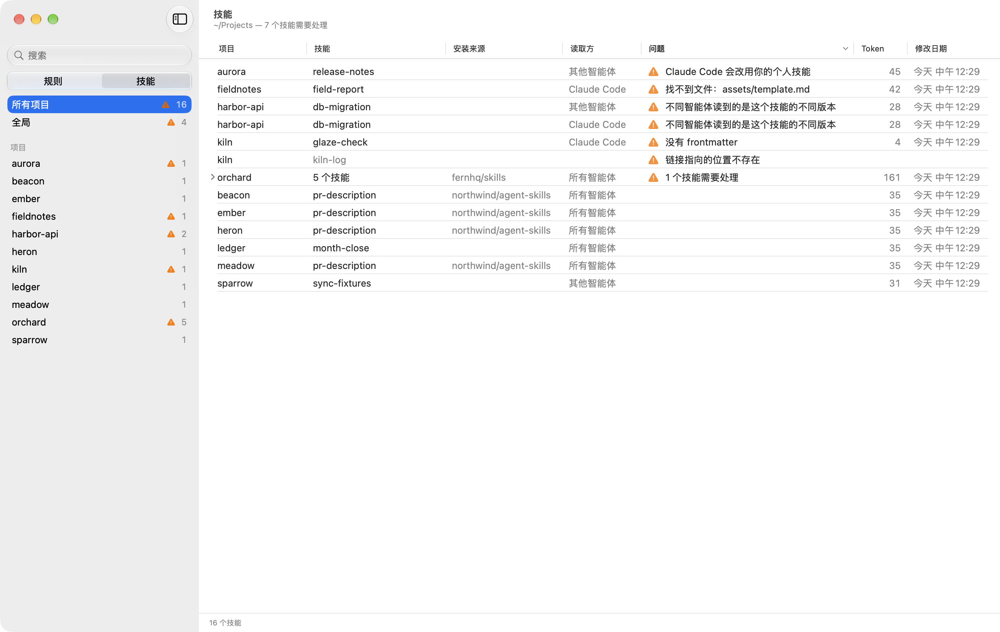
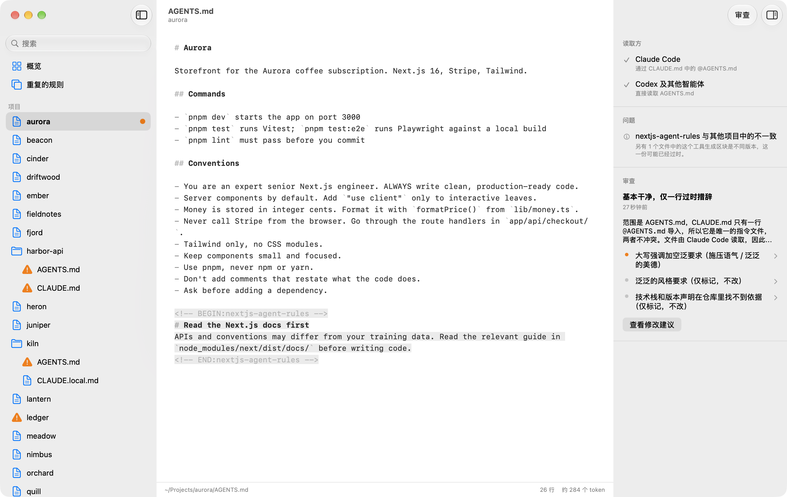

Rulebook 会找出所有项目里编程智能体读取的 CLAUDE.md、AGENTS.md 和技能，告诉你哪些已经互相不一致，哪些根本没被读到，哪些还是为去年的模型写的，然后帮你把它们修好。
免费开源，需要 macOS 14 或更高版本。

看清每个智能体实际读到了什么
Claude Code 读 CLAUDE.md，Codex、Cursor 和大多数其他智能体读 AGENTS.md。当一个项目里两者都有时，Rulebook 会判断它们之间的关系，并告诉你每个文件由谁读取。
- 已关联
CLAUDE.md只是导入AGENTS.md，或是指向它的符号链接。所有智能体读的是同一份文件。- 分层
CLAUDE.md导入了AGENTS.md，并补充了只给 Claude Code 的规则。- 内容重复
- 两份完全相同的副本。Rulebook 只显示一份，存储时同时写入两份。
- 内容不一致
- 两份内容不同的文件，每个智能体都读不到另一方的规则。
- 被跳过
AGENTS.md被CLAUDE.local.md或上级目录的CLAUDE.md取代，Claude Code 不会加载它。

对比并合并已经不一致的文件
两份文件出现差异时，“对比”会把它们并排显示。“合并”会让你的智能体把两者合成一份 AGENTS.md，以及一份导入它的 CLAUDE.md。存储之前，你可以先检查结果。

找出在各个项目里重复的规则
“重复的规则”会列出写在多个项目里的规则，比如八份 AGENTS.md 里都有的“Use pnpm, never npm or yarn”，措辞不同的也会归在一起。把一条规则移到全局文件后，Rulebook 会把它加到 ~/.claude/CLAUDE.md 和 ~/.codex/AGENTS.md，再从各个项目中移除，存储前你可以先检查。

让每个智能体都用上每个技能
把边栏从“规则”切换到“技能”，Rulebook 会列出每个项目和个人文件夹里的技能：由哪些智能体加载、从哪里安装，以及它的名称和描述在每次会话中占用多少上下文。
Claude Code 只在 .claude/skills 里查找，Codex 和大多数其他智能体在 .agents/skills 里查找。Rulebook 会找出只有一方能用到的技能、内容已经不一致的副本和失效的链接，并给出修复办法。用 npx skills 安装的技能按来源归在一起，同一个仓库的四十个技能只占一行。

用你已经在用的智能体来审查
审查会对照项目检查一个文件：为旧模型写的指令、已经不存在的命令和路径、互相矛盾的规则。你会得到一句结论、可以跳转到对应原文的问题列表，以及以差异形式呈现的修改建议。
审查通过 Claude Code 或 Codex 运行，使用你已有的登录，并且无法修改你的文件。应用界面和审查结果都支持简体中文和英文。

安装
- 下载 Rulebook.zip 并打开。
- 把 Rulebook 拖到“应用程序”文件夹，然后打开它。
- 选择存放各个项目的文件夹。
Rulebook 已由 Apple 签名并公证，支持 Apple 芯片和 Intel 芯片的 Mac。它会自动检查新版本，并提示你安装。
你也可以用 Xcode 26 或更高版本从源代码构建。